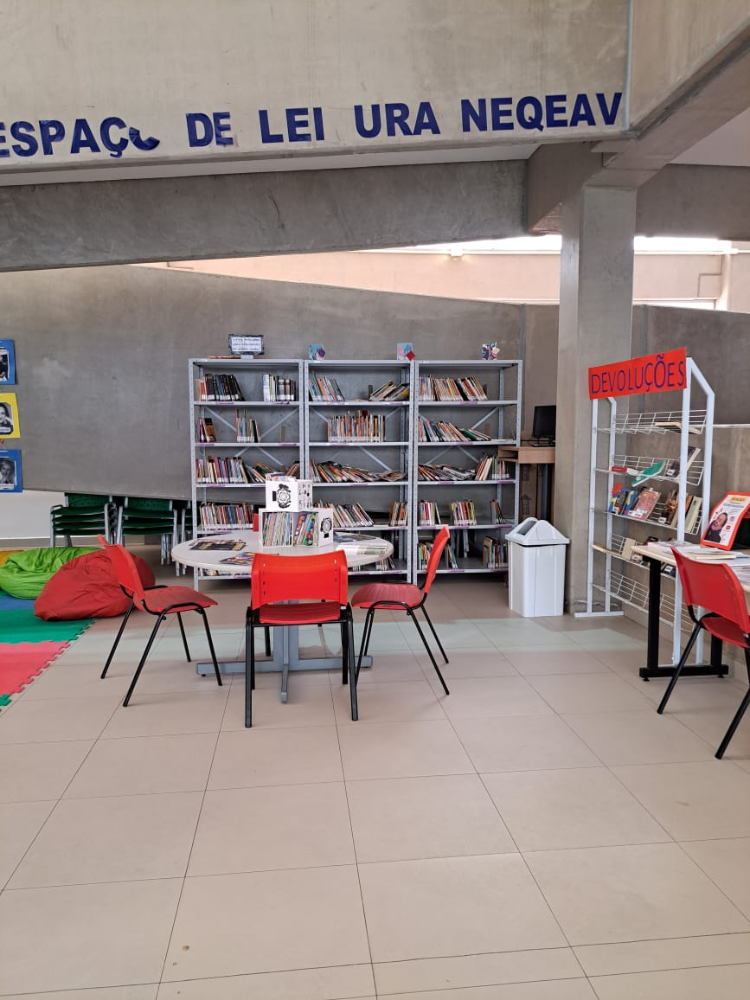

SESI
Criado em 1946, o SESI atende indústrias e trabalhadores em gestão da Segurança e Saúde no Trabalho (SST) e na promoção da saúde e educação dos trabalhadores, seus dependentes e comunidade.

Educação
A rede escolar SESI-SP propõe a Educação Básica integrada por uma proposta pedagógica que se fundamenta em bases conceituais sólidas, que visa à formação do indivíduo na cidadania, capaz de participar ativamente de uma sociedade plural, por meio do exercício da liberdade, do respeito e da solidariedade. Esse projeto é concretizado por meio de um currículo aberto às atualizações, às demandas da sociedade contemporânea e às culturas infantis e juvenis.

Biblioteca
A Biblioteca Escolar SESI-SP é um espaço de pesquisa, leitura, estudo, encontros e formação de público, que tem como objetivos preservar e garantir a democratização do conhecimento e o acesso às novas tecnologias, oferecendo acervo diversificado para atender às necessidades pedagógica, cultural e social de seus usuários.

Alimentação
A Alimentação Escolar do SESI-SP fornece diariamente 140 mil refeições, entre lanches e almoços. Um dos nossos objetivos é garantir a qualidade de todas as preparações oferecidas do ponto de vista de higiene e também nutricional, para isso atendemos todas as legislações vigentes além de diversos procedimentos desenvolvidos por nossa equipe de nutricionistas que garantem refeições equilibradas e deliciosas.